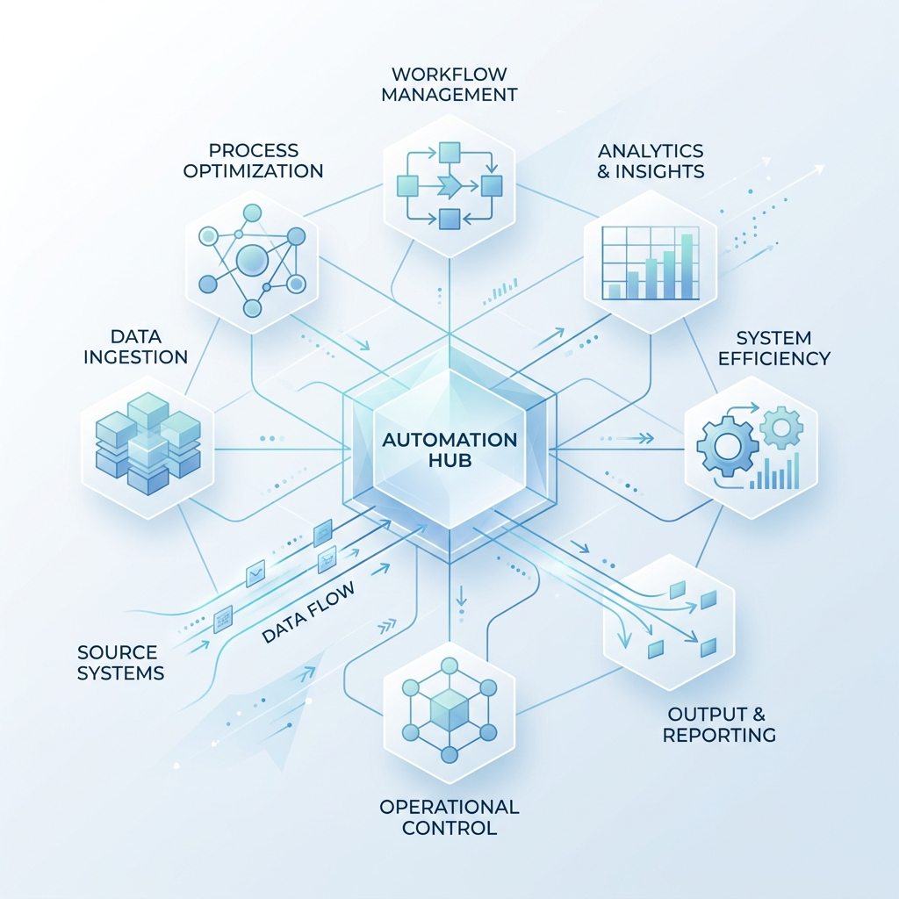
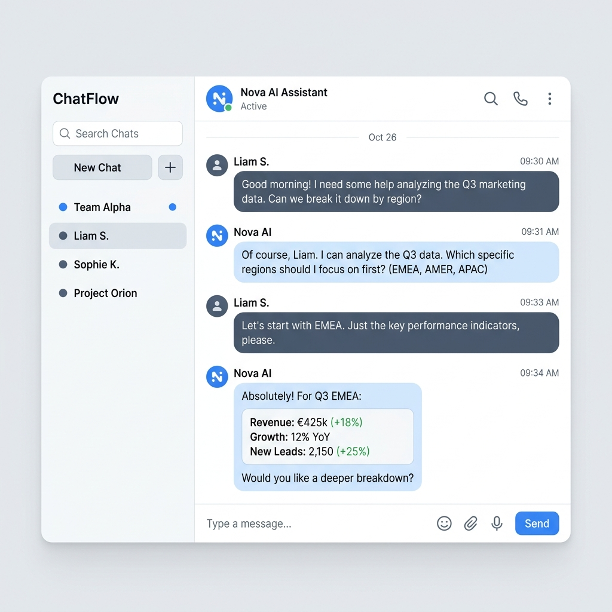

Dify vs Make: AIエージェント構築で失敗しないためのアーキテクチャ選定マトリクス
「AIファースト」か「連携ファースト」か。用途に応じた最適な自動化プラットフォームの選び方を徹底解説。
人間とAIエージェントが協調し、ビジネスプロセスを自律的に実行・最適化する未来のインフラを紐解く専門メディア

「AIファースト」か「連携ファースト」か。用途に応じた最適な自動化プラットフォームの選び方を徹底解説。

1つのAIに全てを任せる時代から、専門AIが分業するマルチエージェント時代へ。ハルシネーションを抑制する次世代アーキテクチャ。

AIの不確実な出力を前提とした、Makeでの堅牢なエラーハンドリング設計手法。JSON ValidationとBreak & Retryの極意。

パブリッククラウドのAPIに機密情報を渡せない企業向けの、ローカルLLM（Ollama）を用いた完全オンプレミスRAGの構築手順。
API費用の高騰とセキュリティの壁を突破する「MCP（Model Context Protocol）」とローカルLLMのハイブリッド構成。設計思想から、Make連携時の泥臭い失敗談までを解説します。
従来の条件分岐型自動化から、AIエージェントが自律的に状況を判断しタスクを遂行する動的オートメーションへのシフト。設計思想と実装プロセスを解説します。
API連携のハブとなるiPaaSツール。AIモジュールの対応状況、コスト効率、複雑なデータ変換性能を軸に、2026年現在の両プラットフォームの強みを比較検証。
セキュリティ担保とコストカットを両立。オープンソースのLLMをプライベートサーバーで稼働させ、Slack経由でドキュメント分析を行う実用的な実装ガイド。